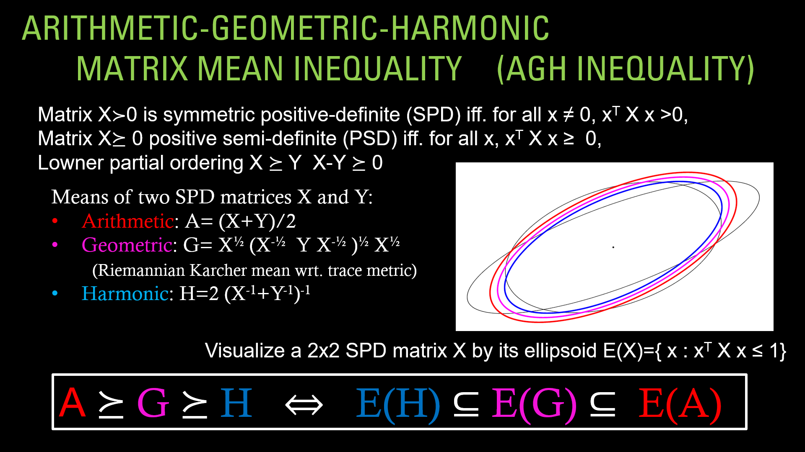
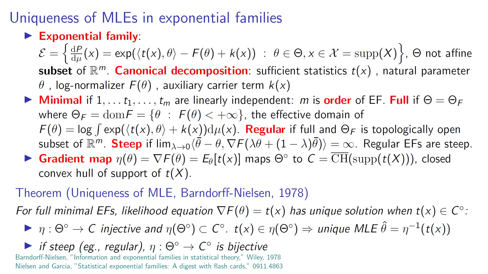
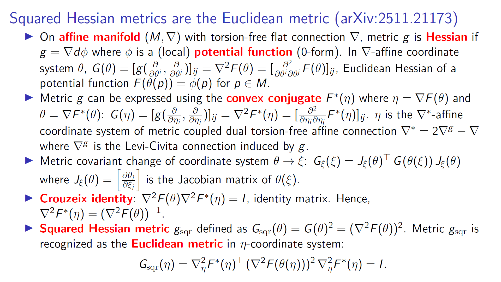
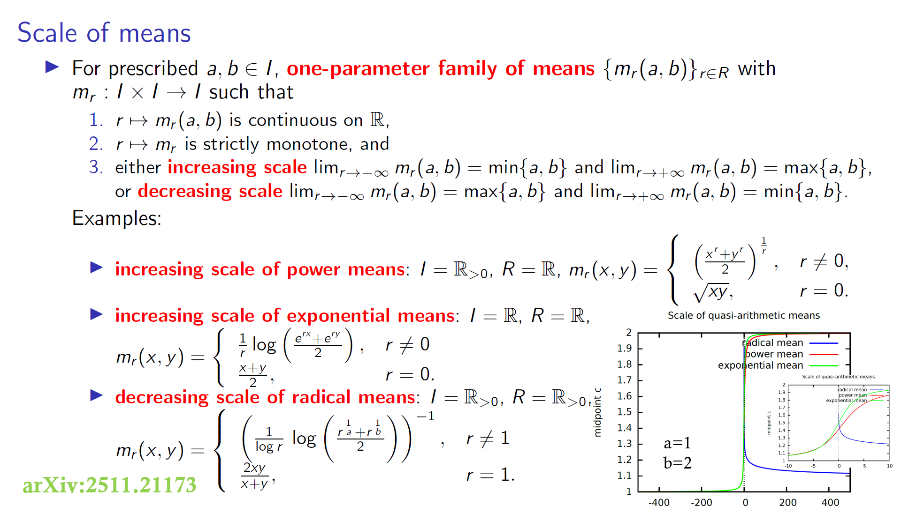

Research cards
You can also check many resarch cards here.
- Matrix arithmetic-geometric-harmonic inequality visualized as corresponding nested ellipsoids:

- Uniqueness of maximum likelihood estimators (MLEs) in full minimal exponential families:

- Square Hessian metric g^2=(∇^2 F(θ))^2 yields the Euclidean metric expressed in the dual coordinate system η:

- A scale of means is a parametric family of means {m_r(a,b)}_r which covers (a,b) when r ranges in R:
